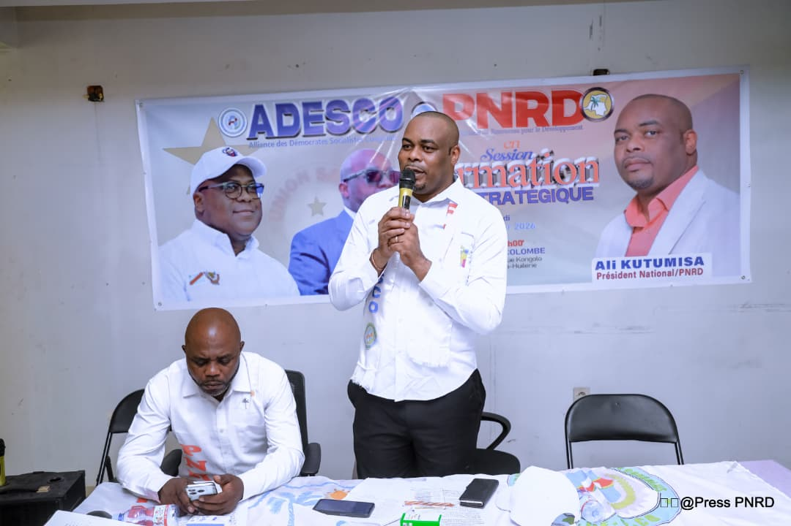
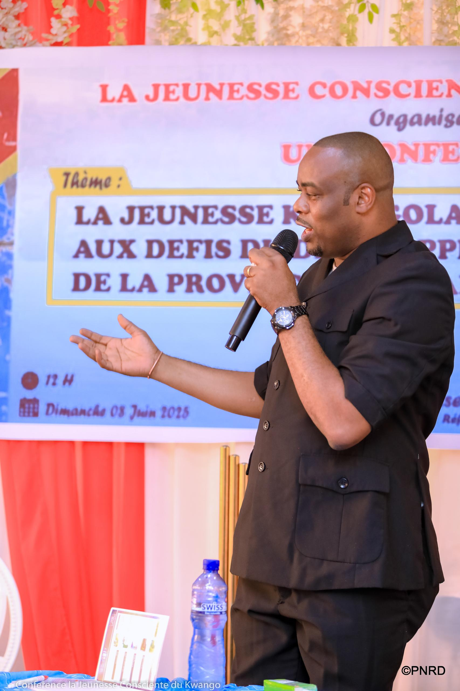
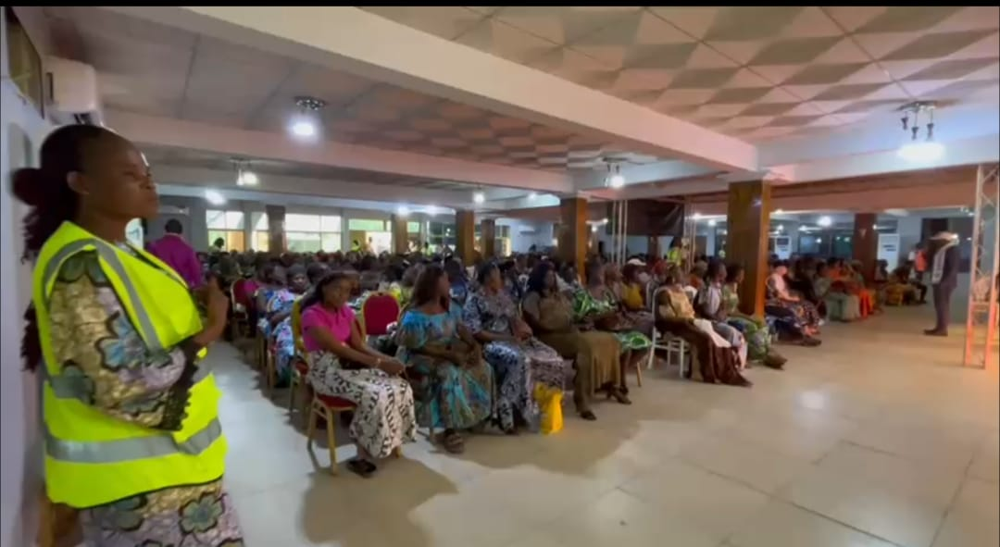
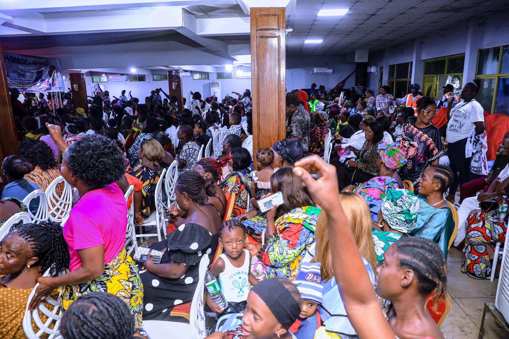
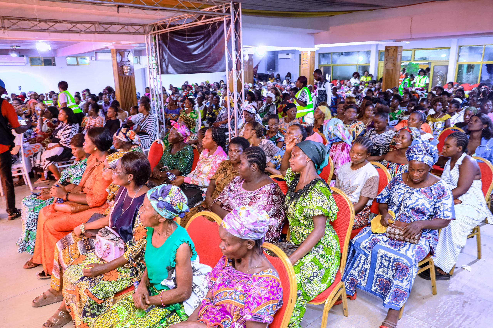
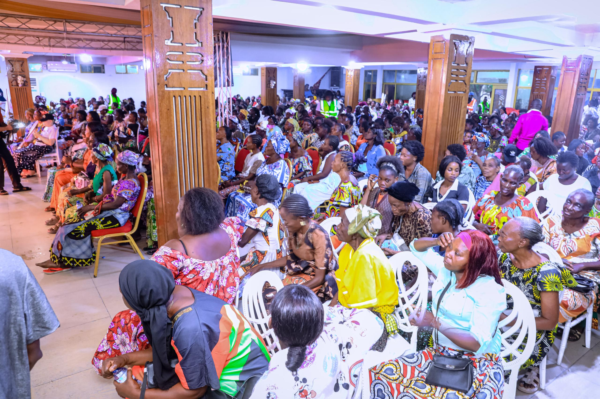

De sa création
Le Parti National du Renouveau pour le Développement (PNRD) est né de la volonté d'un groupe de citoyens congolais convaincus qu'un changement profond et durable ne peut venir que d'un engagement politique organisé, discipliné et ancré dans les réalités du terrain. Face aux défis multiples que traverse la République Démocratique du Congo, ses fondateurs ont choisi de rassembler des femmes et des hommes de toutes les provinces autour d'un même projet : reconstruire la confiance entre les gouvernants et les gouvernés, et remettre le développement au centre de l'action politique.
Depuis sa création, le PNRD s'est structuré sur l'ensemble du territoire national et au sein de la diaspora, autour d'une direction nationale, de coordinations provinciales et d'un réseau croissant de militants.

Son idéologie
L'idéologie du PNRD repose sur une conviction simple : le développement d'une nation ne peut être durable que s'il est porté par ses propres citoyens, dans le respect de la démocratie, de la justice sociale et de l'État de droit. Le parti défend un nationalisme responsable, tourné vers l'unité nationale et la valorisation des ressources humaines et naturelles du Congo.
Il refuse les logiques de division ethnique ou régionale et place l'intérêt général au-dessus des intérêts particuliers. Pour le PNRD, la politique n'est pas une fin en soi mais un instrument au service du peuple congolais, de sa dignité et de son émancipation économique.

Sa Doctrine
Sur le plan doctrinal, le PNRD s'inscrit dans une ligne progressiste et sociale-démocrate : il prône une économie de marché régulée, mise au service du bien commun, une redistribution équitable des richesses issues des ressources naturelles du pays, et un État fort mais proche de ses citoyens.
Le parti défend la bonne gouvernance, la lutte contre la corruption, la décentralisation effective du pouvoir vers les provinces, et l'investissement prioritaire dans l'éducation, la santé et les infrastructures — une doctrine pragmatique, adaptée aux réalités locales tout en restant fidèle aux principes fondateurs du mouvement.

Nos valeurs fondamentales
Quatre valeurs guident chaque action menée par le PNRD : la démocratie, comme mode de gouvernance et de désignation des responsables du parti ; la justice, entendue comme l'égalité de tous devant la loi et l'équité dans la répartition des richesses ; la transparence, dans la gestion des affaires publiques comme dans celle du parti lui-même ; et la solidarité, envers les plus vulnérables et entre toutes les communautés qui composent la nation congolaise.
Ces valeurs ne sont pas de simples déclarations : elles structurent le fonctionnement interne du parti, de la base militante jusqu'à sa direction nationale.
De l'emblème du PNRD
La carte, en bleu — le territoire national, sans exclusive de province. Le palmier, en vert — enraciné, il symbolise la vitalité du peuple congolais. Le soleil, en doré — le "Renouveau" du nom du parti, une nouvelle aube pour la nation. Le sigle "PNRD", en bordeaux — l'engagement et la détermination des militants.
Ensemble, ces symboles traduisent la vision du parti : un Congo uni, enraciné dans ses valeurs, tourné vers un avenir meilleur.

Notre organisation
Le PNRD s'organise autour d'une direction nationale, présidée par le Président national, entourée d'un secrétariat général et de commissions thématiques (jeunesse, mobilisation, communication, logistique...). Cette structure se décline au niveau provincial et local à travers des coordinations chargées de relayer les orientations du parti et de faire remonter les préoccupations du terrain.
Le PNRD agit également aux côtés de ses alliés, dont l'ADESCO (Alliance des Démocrates Socialistes Congolais), au sein d'un même mouvement pour le renouveau démocratique du pays.
Découvrir l'équipe
L'Adhésion
Le PNRD est ouvert à toute Congolaise et à tout Congolais, résidant au pays ou dans la diaspora, qui souhaite s'engager pour le renouveau et le développement de la nation. Rejoindre le parti, c'est intégrer un mouvement structuré, discipliné et tourné vers l'action, aux côtés de milliers de militants à travers le pays.
Adhérer au PNRD